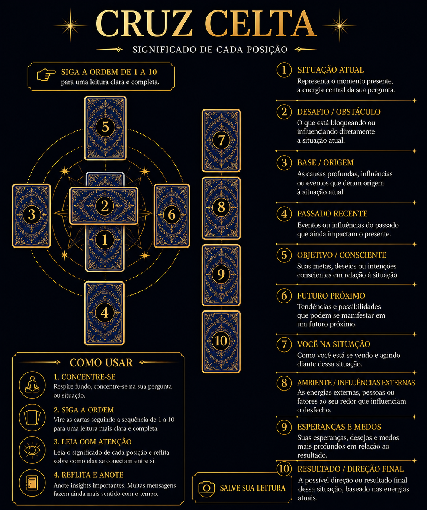

🔮 Estrutura da Cruz Celta
Use o scroll do mouse para aproximar ou afastar a imagem.

Responda intuitivamente:
Você sente que certos ciclos continuam se repetindo em sua vida?
Existe alguma situação atual que você sente dificuldade em compreender?
Você acredita que símbolos podem revelar aspectos ocultos da mente?
Você deseja abrir agora sua Cruz Celta completa?
Não exite, a Cruz Celta é uma das estruturas mais profundas do tarot. Ela revela tendências, padrões ocultos e movimentos internos.
Acesse imediatamente o Oráculo da Cruz Celta.
Pagamento processado pela Hotmart.
Use o scroll do mouse para aproximar ou afastar a imagem.
